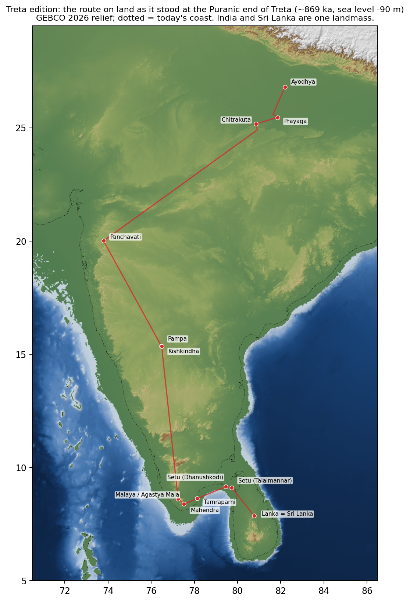
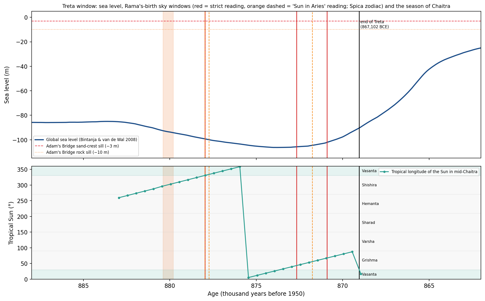
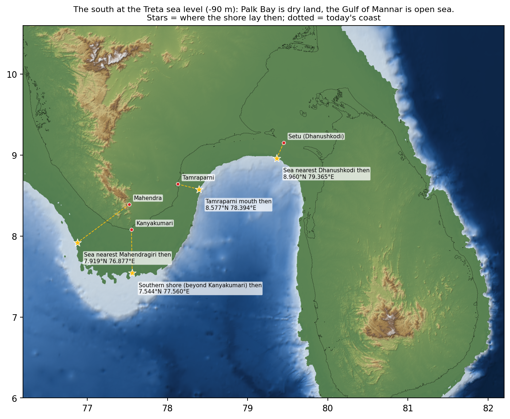

On this page
Treta-Yuga edition: the places of the Valmiki Ramayana on a ~870,000-year timeline
Companion to the historical edition (see the comparison page). Same GEBCO 2026 grid and the same Sanskrit evidence. This edition assumes the Puranic chronology and recomputes the sky, the sea, the coasts and the coordinates for it.
1. Coordinates on the Treta timeline
"Today" is where to find each spot on a modern map. "On the plate at Rama's birth" is where that same ground stood 880,167 years ago (India-plate rotation, NNR-MORVEL56). Every site moved together, so the distances between them are unchanged. The last column describes the place in the world of -90 m sea level.
| Place | Today | On the plate at Rama's birth | Setting at the Treta sea level |
|---|---|---|---|
| Ayodhya | 26.7956°N, 82.1943°E | 26.4912°N, 81.8381°E | 195 m above the sea of that time |
| Prayaga | 25.4575°N, 81.8585°E | 25.1533°N, 81.5024°E | 183 m above the sea of that time |
| Chitrakuta | 25.1714°N, 80.8532°E | 24.8677°N, 80.4994°E | 267 m above the sea of that time |
| Panchavati | 20.0067°N, 73.7936°E | 19.7092°N, 73.4498°E | 658 m above the sea of that time |
| Kishkindha | 15.3527°N, 76.4919°E | 15.0523°N, 76.1381°E | 505 m above the sea of that time |
| Malaya | 8.6163°N, 77.2457°E | 8.3152°N, 76.8845°E | 1,543 m above the sea of that time |
| Mahendra | 8.3883°N, 77.5214°E | 8.0870°N, 77.1598°E | shore 88 km away, at 7.9187°N, 76.8771°E |
| Tamraparni mouth | 8.6413°N, 78.1273°E | 8.3395°N, 77.7655°E | shore 30 km away, at 8.5771°N, 78.3937°E |
| Southern ocean shore | 8.0780°N, 77.5505°E | 7.7767°N, 77.1886°E | shore 59 km away, at 7.5437°N, 77.5604°E |
| Setu, Indian end | 9.1504°N, 79.4491°E | 8.8476°N, 79.0866°E | shore 23 km away, at 8.9604°N, 79.3646°E |
| Setu, Lanka end | 9.1055°N, 79.7307°E | 8.8025°N, 79.3679°E | shore 36 km away, at 8.8604°N, 79.5146°E |
| Lanka = Sri Lanka? | 7.8731°N, 80.7718°E | 7.5694°N, 80.4074°E | shore 83 km away, at 8.4687°N, 81.2271°E |
| Equatorial ridge candidate A: Huvadhu atoll plateau | 0.5190°N, 73.2830°E | ≈ 52 km SW of today's position | Huvadhu atoll (Maldives) as an exposed limestone plateau: 3,737 km2, ~216 m above the Treta sea; 949 km from Mahendragiri (100 yojanas at 9.5 km); 2,286 m-deep sill to India |
| Equatorial ridge candidate B: Fuvahmulah plateau | 0.3070°S, 73.4330°E | ≈ 52 km SW of today's position | Fuvahmulah (Maldives): 39 km2, ~109 m above the Treta sea; 1,065 km from Mahendragiri; channel to Huvadhu 1,995 m deep |
| Equatorial ridge candidate C: Addu atoll plateau | 0.6360°S, 73.1610°E | ≈ 52 km SW of today's position | Addu atoll (Maldives): 206 km2, ~151 m above the Treta sea; 1,104 km from Mahendragiri; channel to Fuvahmulah 1,901 m deep |
| Equator x Ujjain meridian at the Puranic end of Treta (~869 ka) | 0.2959°N, 75.7911°E | ≈ 52 km SW of today's position | Today's location of that point after India-plate motion since 869 ka: open ocean, 4,308 m deep (GEBCO) |
| Drowned island: Great Chagos Bank | 6.2000°S, 71.9000°E | ≈ 52 km SW of today's position | ~14,550 km2 limestone island at the Treta sea level (-90 m); reduced to reef ~10-8 ka by post-glacial sea-level rise; 5.6 km2 of islets today |

2. Chronologies
| Chronology | End of Treta | Rama's birth (end of Treta + 11,000-year reign + ~40 yr) |
|---|---|---|
| Puranic / Surya Siddhanta: maha-yuga 4,320,000 yr, Treta 1,296,000 yr (this edition) | 867,102 BCE | ~878,142 BCE |
| Tradition placing Rama in the 24th maha-yuga | 18,147,102 BCE | Miocene; before any hominin, not modelled |
| Manusmriti 1.69–71 / Mahabharata 3.186 literal 12,000-yr cycle | 5502 BCE | covered by the historical edition |
3. The sky of the Treta Yuga
3.1 How it was computed, and how well
- Planets: a REBOUND symplectic N-body integration (Sun plus nine planetary systems; initial state from JPL DE440s at
J2000; 2-day steps) run back to 881,000 BCE. A Newtonian integration slowly drifts in longitude because it
lacks general relativity. The drift was measured against DE441 at 15 epochs from 9,900 BCE to 2000 CE (JPL Horizons) and
is a straight line, so it is removed:
Independent check against four earlier DE441 dates (4498–7120 BCE) after correction: Sun 0.005°, Venus 0.003°, Mars 0.020°, Jupiter 0.005°, Saturn 0.005°. Estimated uncertainty at 869 ka: Sun and Venus ±1°, Mars ±1–2°, Jupiter and Saturn ±0.1°, against 30° signs and 13.3° nakshatras. Mercury is unreliable (no relativity), so the Mercury clauses are tested only as "possible".Body Drift (deg/kyr) Scatter about the line (deg) Correction at 869 ka emb -0.02249 0.0007 +19.6° mercury +0.09499 0.2168 -82.6° venus +0.04793 0.0086 -41.6° mars +0.01116 0.0097 -9.7° jupiter +0.00034 0.0002 -0.3° saturn +0.00011 0.0002 -0.1° - Earth's axis: the spin axis was precessed around the moving ecliptic. The precession constant was scaled for orbital eccentricity and for the faster spin and closer Moon of the past. The resulting obliquity tracks Berger & Loutre (1991) with correlation 0.992 over 883 kyr (23.70° against 23.75° at 869 ka). The equinox from this model fixes the seasons, uncertain by about ±5° at 869 ka.
- Stars: the zodiac anchors moved with their full 3-D space motion (Hipparcos 2007 astrometry, catalogued radial
velocities). In 869 kyr the stars that define the nakshatras moved a long way:
Punarvasu's two stars, Castor and Pollux, moved 56° and 75° and were not a pair then. "Aditi's nakshatra" can only be defined as a formal 13°20′ segment counted from an anchor star, and the choice of anchor shifts the zodiac by tens of degrees. All three classical anchors are therefore shown.Star Moved across the sky since the end of Treta Spica (Chitra, alf Vir) 12.6° Revati (zet Psc) 41.1° Pushya (del Cnc) 57.4° Pollux (Punarvasu, bet Gem) 74.7° Castor (Punarvasu, alf Gem) 55.6° Aldebaran (Rohini, alf Tau) 148.3° Regulus (Magha, alf Leo) 53.2°
3.2 Rama's birth sky (Bala 1.18.8–9)
The geometry that rules out five exalted planets holds at any epoch. Navami with the Moon in Punarvasu–Cancer puts the Sun at 342°–357°, so neither the Sun nor Mercury can be exalted. The search therefore uses the best possible case: Jupiter in Cancer, Saturn in Libra, Mars in Capricorn and Venus in Pisces, with the Sun at 342°–357°. Whether the navami Moon fell inside a given window cannot be computed this far back. The chance is about the window's length divided by the 29.5-day lunar month.
| Zodiac anchor | Window starts | Days long | Chance the navami Moon fell inside | Sun (sidereal) | Sun (tropical) and season | Sea level | Battle-sky episodes at age 30–45 | Years before the end of Treta |
|---|---|---|---|---|---|---|---|---|
| Spica (Lahiri) | 876,021 BCE | 14 | 47% | 351.7° | 321.3° (Shishira) | -99 m | 1 | 8,919 |
| Spica (Lahiri) | 870,719 BCE | 2 | 7% | 351.3° | 34.9° (Grishma) | -106 m | 0 | 3,617 |
| Spica (Lahiri) | 868,951 BCE | 14 | 47% | 350.2° | 58.4° (Grishma) | -102 m | 1 | 1,849 |
| ζ Psc (Revati) | 880,031 BCE | 2 | 7% | 342.9° | 211.6° (Hemanta) | -87 m | 1 | 12,929 |
| ζ Psc (Revati) | 874,492 BCE | 6 | 20% | 355.9° | 302.8° (Shishira) | -103 m | 2 | 7,390 |
| ζ Psc (Revati) | 873,875 BCE | 2 | 7% | 356.7° | 312.3° (Shishira) | -104 m | 1 | 6,773 |
| ζ Psc (Revati) | 873,638 BCE | 6 | 20% | 346.8° | 305.8° (Shishira) | -104 m | 1 | 6,536 |
| ζ Psc (Revati) | 873,021 BCE | 2 | 7% | 343.5° | 311.2° (Shishira) | -105 m | 0 | 5,919 |
| δ Cnc (Pushya) | 877,172 BCE | 14 | 47% | 352.2° | 283.8° (Shishira) | -96 m | 1 | 10,070 |
| δ Cnc (Pushya) | 872,724 BCE | 2 | 7% | 355.9° | 350.2° (Vasanta) | -106 m | 1 | 5,622 |
| δ Cnc (Pushya) | 872,487 BCE | 2 | 7% | 346.3° | 343.8° (Vasanta) | -106 m | 1 | 5,385 |
| δ Cnc (Pushya) | 871,870 BCE | 10 | 34% | 347.1° | 353.3° (Vasanta) | -106 m | 0 | 4,768 |
The commentators' reading (Sun in Aries, plus the same four) gives:
| Zodiac anchor | Window starts | Days long | Sun (tropical) and season |
|---|---|---|---|
| Spica (Lahiri) | 876,021 BCE | 22 | 344.1° (Vasanta) |
| Spica (Lahiri) | 875,784 BCE | 22 | 345.8° (Vasanta) |
| Spica (Lahiri) | 869,805 BCE | 2 | 78.2° (Grishma) |
| ζ Psc (Revati) | 876,497 BCE | 10 | 293.3° (Shishira) |
| ζ Psc (Revati) | 875,346 BCE | 2 | 323.1° (Shishira) |
| ζ Psc (Revati) | 874,729 BCE | 14 | 328.8° (Shishira) |
| ζ Psc (Revati) | 874,492 BCE | 10 | 314.8° (Shishira) |
| ζ Psc (Revati) | 873,875 BCE | 6 | 320.3° (Shishira) |
| δ Cnc (Pushya) | 877,789 BCE | 6 | 301.1° (Shishira) |
| δ Cnc (Pushya) | 872,724 BCE | 14 | 5.8° (Vasanta) |
| δ Cnc (Pushya) | 867,185 BCE | 14 | 96.0° (Varsha) |
3.3 Months and seasons in the Treta epoch
The Critical Edition's month–season pairings (Caitra in bloom, Śrāvaṇa the first rains, Kārtika the campaign season, hemanta with the Sun in the south) were tested every 500 years across the window. Precession carries the months right round the seasons in ~25,700 years, so over 14,000 years they pass for part of the time only:
| Zodiac anchor | Years in which all four pairings hold | Those years (BCE) |
|---|---|---|
| Spica (Lahiri) | 10 of 29 | 877,000, 876,500, 876,000, 875,500, 875,000, 874,500 … |
| ζ Psc (Revati) | 10 of 29 | 873,500, 873,000, 872,500, 872,000, 871,500, 871,000 … |
| δ Cnc (Pushya) | 11 of 29 | 875,500, 875,000, 874,500, 874,000, 873,500, 873,000 … |

4. Sea, coasts and rivers at the end of Treta
- Sea level -94 m at the birth epoch and -90 m at the end of Treta (range -106 to -87 m), during the MIS 22 glaciation. Within ~10 kyr after the end of Treta the sea rose to about −20 m.
- India and Sri Lanka were one landmass with its southern tip at 5.8350°N, 80.1980°E. The Wadge Bank put the cape 83 km south-west of Kanyakumari.
- The Tamraparni ran ~30 km further, across the exposed shelf, to a mouth near 8.58°N 78.39°E. The Palk Bay rivers (Vaigai and others) flowed across what is now sea.
- Plate motion: ~52 km south-west for every site, with no change in the distances between them. Axial tilt was 23.75°, which moves the tropics but not the equator. True polar wander of 5.3° would be needed to put the equator × Ujjain point on land.

4.1 The equatorial-Lanka hypothesis and the drowned islands of Chagos
The full tests are in Section 8 of the historical edition and are repeated here in brief.
- The equatorial Maldives plateaus (Huvadhu 0.519°N 73.283°E, Fuvahmulah, Addu) were land at the equator, 950–1,100 km from Mahendragiri (100 yojanas at 9.5–11 km). They were cut off from India by ≥ 2,286 m of sea.
- The equator × Ujjain point was 4,308 m deep.
- The Great Chagos Bank island (~14,550 km²), Pitt Bank (~2,180 km²) and Speakers Bank (~980 km²) were land at the Treta sea level and are drowned today.
- No crater, break or debris marks the banks.


4.2 Lemuria, Kumari Kandam and Mauritius
Where the ideas come from. "Lemuria" was proposed in 1864 by the zoologist Philip Sclater. He wanted a sunken land bridge to explain why lemur-like primates lived in Madagascar and South Asia. Continental drift made it unnecessary: India and Madagascar were once joined and separated about 88 million years ago. Tamil tradition separately remembers Pandya lands south of Kumari lost to the sea, among them Kapatapuram and the older Madurai. In the 19th and 20th centuries the two ideas were merged as "Kumari Kandam" (Ramaswamy 2004). Some readers link Valmiki's "golden gate (kavāṭa) of the Pandyas" (Kishkindha 41.19) to Kapatapuram by its name. At the Puranic end of Treta the sea stood about 90 m lower, so the numbers that matter are those for −90 m.
Kumari Kandam on the data. The land south of India and around Sri Lanka that is sea today but was dry at low sea level (GEBCO 2026):
| At −90 m (end of Treta) | At −128 m (ice-age low) | |
|---|---|---|
| Land of South India and Sri Lanka now under the sea | 92,688 km² | 100,025 km² |
| of which the Palk Bay and Strait | 26,256 km² | 26,885 km² |
| of which south of Kanyakumari (Wadge Bank) | 8,636 km² | 10,871 km² |
| Southernmost dry land below Kanyakumari | 7.41°N | 7.35°N |
Beyond that shelf the sea floor falls away fast:
| Directly south of Kanyakumari | Depth today |
|---|---|
| 7.0°N, 77.5°E | 889 m |
| 6.0°N, 77.5°E | 2,372 m |
| 5.0°N, 77.5°E | 2,788 m |
| 3.0°N, 77.5°E | 3,948 m |
| 0.0°N, 77.5°E | 4,763 m |
Lemuria on the data. At the lowest sea level of the last million years, the whole Chagos–Laccadive ridge held 52,033 km² of land in 76 separate pieces. The Mascarene banks added about 55,082 km² at the same sea level (table below). Between them the open ocean has a median depth of 3,926 m. Between the Mascarene banks and Chagos the floor never rises above 3,752 m, and between India and the Maldives above 2,592 m. That is an archipelago of drowned limestone banks, not a continent.
Mauritius. Mauritius lies west of the GEBCO subset, so it was tested on NOAA ETOPO 2022 (1′). The banks of the Mascarene Plateau were large islands at low sea level. Mauritius and Réunion, steep volcanoes, barely change.
| Island or bank | Land today (km²) | at −90 m | at −128 m | km from Mahendragiri | km per yojana if 100 | km from equator | km from Ujjain's meridian |
|---|---|---|---|---|---|---|---|
| Mauritius | 1,865 | 2,797 | 2,930 | 3,804 | 38 | 2,248 | 1,895 |
| Reunion | 2,512 | 2,854 | 2,893 | 4,039 | 40 | 2,349 | 2,100 |
| Rodrigues | 108 | 992 | 1,038 | 3,469 | 35 | 2,195 | 1,302 |
| Saya de Malha Bank | 0 | 18,450 | 29,220 | 2,655 | 27 | 1,176 | 1,593 |
| Nazareth Bank | 0 | 15,027 | 19,158 | 3,049 | 30 | 1,621 | 1,630 |
| Cargados Carajos (St Brandon) | 1.3 | 5,569 | 6,704 | 3,310 | 33 | 1,818 | 1,722 |
| Clue | Mauritius |
|---|---|
| On the equator | ✘ 2,248 km south of it (20°S) |
| On Ujjain's meridian | ✘ 1,895 km west of it |
| 100 yojanas from Mahendra | ✘ needs a 38-km yojana, three times any traditional value |
| An island across the sea | ✔ |
| A mountain (Trikuta) | ✔ volcanic peaks to 828 m; the three-peaked Trois Mamelles is a coincidence of shape (a French colonial name) |
| A Setu of trees and rocks | ✘ the sea between it and India is never shallower than 3,752 m |
The real lost continent. Zircon grains 660 million to over 3 billion years old, found in Mauritian sand and lava, show that a fragment of ancient continental crust, named Mauritia, lies buried beneath Mauritius and the Mascarene Plateau (Torsvik et al. 2013; Ashwal et al. 2017). It broke away from Madagascar between 84 and 61 million years ago and was buried by hotspot lavas; Mauritius itself is less than 9 million years old. So the Indian Ocean does hide a sunken piece of continent. It sank tens of millions of years before any human lived, and it lies 3,800 km from Mahendragiri at 20°S.


5. The two editions side by side
| Question | Historical edition (text composed ~1st millennium BCE) | Treta edition (~870,000 years ago) |
|---|---|---|
| Epoch used | Month–season pairings ⇒ ≥ 2950 BCE; sea level near today | End of Treta 867,102 BCE; birth window 881,000–867,000 BCE |
| Sea level | 0 to +1.5 m (mid/late Holocene) | -106 to -87 m |
| Is Sri Lanka an island? | Yes, since ~5200 BCE (sill -3 m) | No: joined to India by dry land |
| Setu | Adam's Bridge: 32–46 km of 0–3 m shoal; 10:1 shape at −4 m | Not needed for Sri Lanka; impossible (2.3 km deep) for the Maldives |
| Lanka | Sri Lanka (passes every geographic test) | No candidate passes all tests; best equatorial land = Huvadhu plateau |
| Birth horoscope | Never satisfiable; nearest 6266 / 4498 BCE (4 exalted), both in winter | Never satisfiable; 4-exalted windows 876,021 / 870,719 / 868,951 BCE (Spica) |
| Seasons of the months | Consistent from ~2950 BCE onward | Consistent in about a third of the window, depending on the anchor star |
| Nakshatra stars | Essentially as today (≤ 0.1° motion) | Moved 12–150°; Castor and Pollux not a pair |
| Coordinates | Today's coordinates (Section 7 of that edition) | Same ground, ~52 km SW on the plate; coasts 23–88 km further out |
| Kumari Kandam | Under the sea (shelf drowned ~10–8 ka) | ~92,700 km² of South India and Sri Lanka dry, to ~7.4°N; no land beyond |
| Lemuria and Mauritius | No sunken continent in human times | Mascarene and Chagos banks were islands; Mauritius fails the equator, meridian, distance and Setu clues |
6. Limits
- The N-body sky is reliable to ~1–2° for the Sun, Venus and Mars and ~0.1° for Jupiter and Saturn at 869 ka. Windows lasting only a few days, such as 870,719 BCE, could shift or vanish within that error.
- The precession and equinox model (validated against Berger & Loutre) leaves the seasons uncertain by about ±5° at 869 ka. The Moon, the calendar day, the time of day and the lagna are not computable.
- Sea level comes from a single model reconstruction (Bintanja & van de Wal 2008), uncertain by ±10–15 m. Vertical land motion over 869 kyr (tens of metres) is not modelled for India.
- This edition takes the Puranic chronology as given in order to test it. It does not establish that chronology. Language, literature and cities are not known from 870,000 years ago, when India's inhabitants were Acheulean-tool-making early humans.
7. Files
data/valmiki_places_treta.kml: the Treta-edition placemarks, the shore points of the time and the −90 m coastline (Google Earth).data/treta_sky.json,data/treta_geo.json,data/nbody_*.json: all computed numbers.scripts/nbody.py,nbody_calib.py,treta_sky.py,treta_geo.py,map_treta.py: the Treta pipeline (needs JPL DE440s, 32 MB, for the initial state).